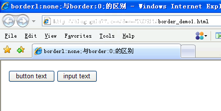
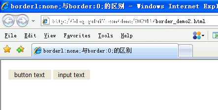
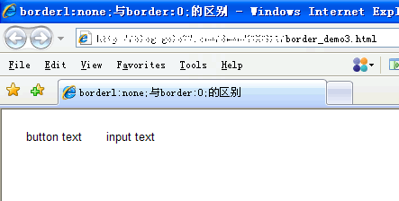

CSS中设置border属性为0与none的区别
在我们设置CSS的时候，对标签元素不设置边框属性或者取消边框属性一般设置为：border:none;或border:0;两种方法均可。border:none;与border:0;的区别体现有两点：一是理论上的性能差异、二是浏览器兼容性的差异。
性能差异
【border:0;】把border设为“0”像素虽然在页面上看不见，但按border默认值理解，浏览器依然对border-width/border-color进行了渲染，即已经占用了内存值。
【border:none;】把border设为“none”即没有，浏览器解析“none”时将不作出渲染动作，即不会消耗内存值。
兼容性差异
兼容性差异只针对浏览器IE6、IE7与标签button、input而言，在win、win7、vista 的XP主题下均会出现此情况。
【border:none;】当border为“none”时似乎对IE6/7无效边框依然存在，如下例

【border:0;】当border为“0”时，感觉比“none”更有效，所有浏览器都一致把边框隐藏

总结：
对比border:0;与border:none;之间的区别在于有渲染和没渲染，感觉他们和display:none;与 visibility:hidden;的关系类似，而对于border属性的渲染性能对比暂时没找测试的方法，虽然认为他们存在渲染性能上的差异但也只能说是理论上。
如何让border:none;实现全兼容？只需要在同一选择符上添加背景属性即可

对于border:0;与border:none;个人更向于使用,border:none;，因为border:none;毕竟在性能消耗没有争议，而且兼容性可用背景属性解决不足以成为障碍。
感谢您的阅读，本文由 胡雷的博客 版权所有。如若转载，请注明出处：胡雷的博客（http://dageger.cn/2017/09/19/fe-css-border/）